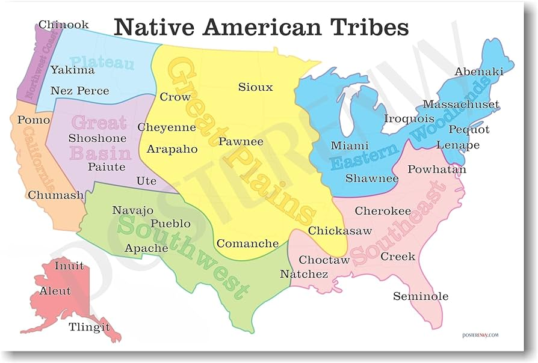

Food is a not only one of the most basic human needs, but it's also a amazing marvel of the world used to show differences from varying cultures. Continue reading to see various foods and cuisines from around Around the World.
The area in which people live would typically decide the type of food that was eaten by those that lived in that area(Until modern transport). An early example of this would be the Native Americans that strictly used the resources in their immediate area to sustain their families and homes.
This is not as true in modern society as technology has allowed for people to posess material from across the globe from where they live. This has also allowed for food culture to disperce to areas where it has never been before and with the constant evolution of technology it wont stop anytime soon.